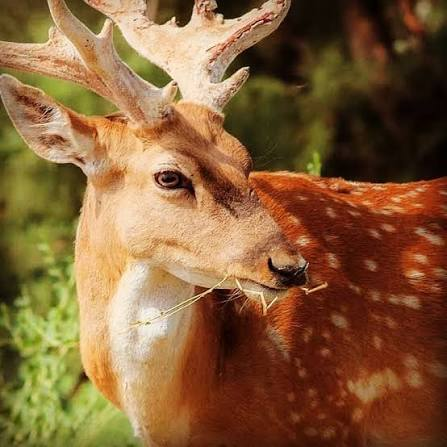

یوزپلنگ ایرانی

یوزپلنگ ایرانی – پیروز
آخرین فرد: ۲۰۱۵
زیستگاه: دشتها و جنگلهای غرب و شمال غرب ایران
ویژگیها: آخرین شیر ایرانی زنده، یال کوتاهتر، نیرومند و قدرتمند
نکتههای جالب: نماد تلاشهای حفاظت از حیوانات ایران بود و با مرگ او شیر ایرانی رسماً منقرض شد.
گوزن زرد اندونزی
گوزن زرد اندونزی (Bali Deer – زیرگونه محلی منقرض شده)
آخرین فرد: اوایل قرن ۲۰
زیستگاه: جزیره بالی، اندونزی، جنگلهای بارانی و مناطق مرتفع جزیره
ویژگیها:
کوچک و چابک، قادر به حرکت سریع در جنگل و زمینهای ناهموار
شاخهای باریک و بلند، با بدن سبک برای پرش و فرار از شکارچیان
غذای اصلی برگها، شاخههای نرم و میوههای جنگلی بود
نکتههای جالب:
شکار و نابودی جنگلها توسط انسان باعث انقراضش شد
رفتار اجتماعی کم، اغلب تنها زندگی میکرد و شبگرد بود
هنوز تصاویر و یادداشتهای قدیمی از آن موجود است و برای سایت خیلی جذاب است
جزیره بالی به دلیل کوچک بودن و محیط محدود، باعث شد هر گونهای که تحت فشار انسان قرار گیرد، سریع منقرض شود
این گوزن نشاندهنده تنوع زیستی اندونزی و اهمیت حفاظت از گونههای جزیرهای بود
گربه وحشی مازندران
گربه وحشی مازندران (Mazandaran Wild Cat)
آخرین فرد: اوایل قرن ۲۰
زیستگاه: جنگلها و کوهستانهای شمال ایران، بهویژه مناطق مازندران و گلستان
ویژگیها:
کمی بزرگتر از گربههای خانگی، بدن چابک و عضلانی
خز مخلوط قهوهای و خاکستری با خطوط کمرنگ
شکارچی تنها و مهارت بالای شکار موش، پرندگان و حیوانات کوچک داشت
نکتههای جالب:
شکار بیرویه و از بین رفتن زیستگاه جنگلی باعث شد که منقرض شود
رفتار مخفی و تنهایی داشت، بیشتر شبگرد بود و انسانها را اجتناب میکرد
هنوز تصاویر و نقاشیهای قدیمی از آن موجود است که به شناخت حیوانات وحشی ایران کمک میکند
یکی از زیباترین گربههای وحشی ایران بود و نماد تنوع زیستی شمال ایران محسوب میشد